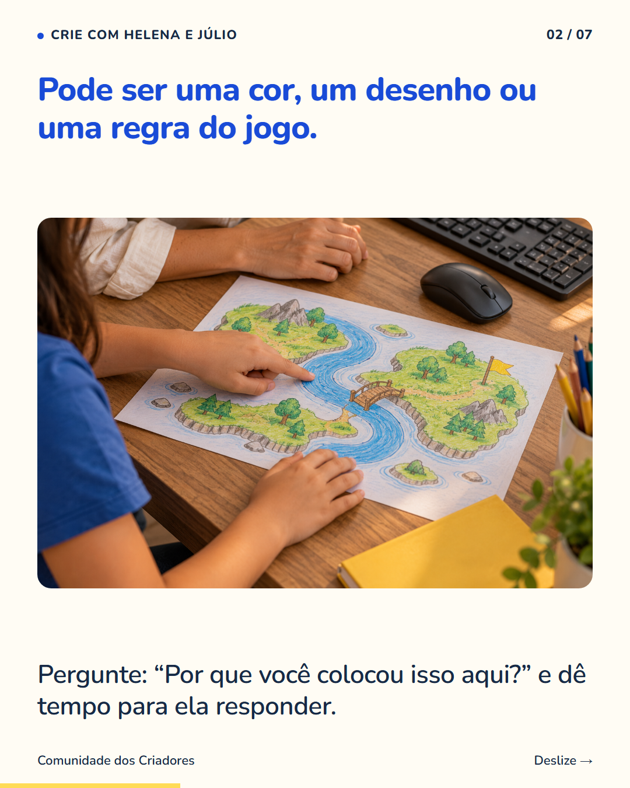
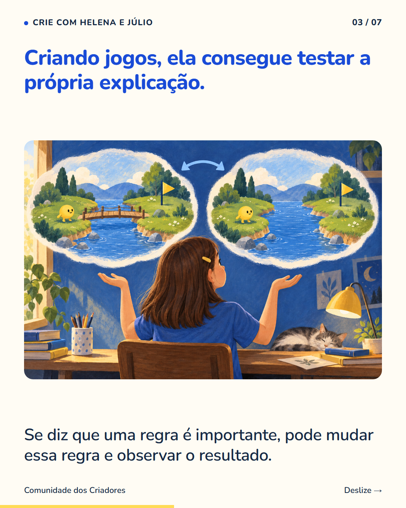
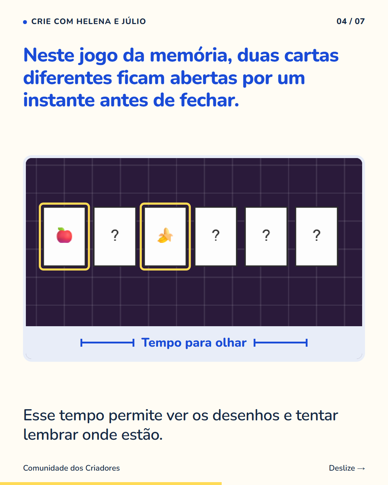
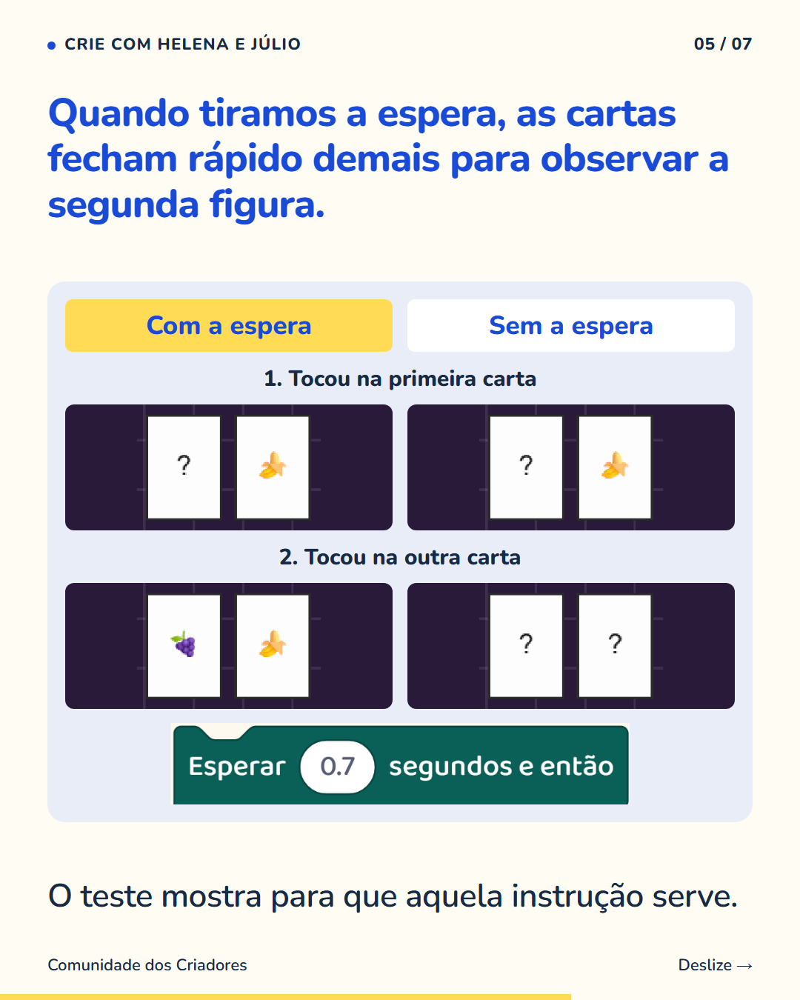
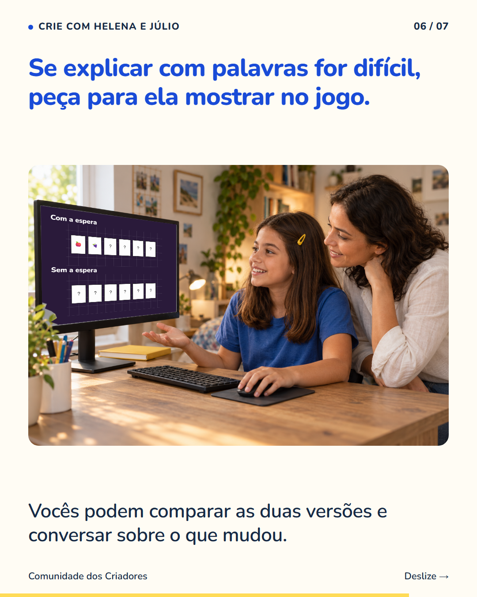
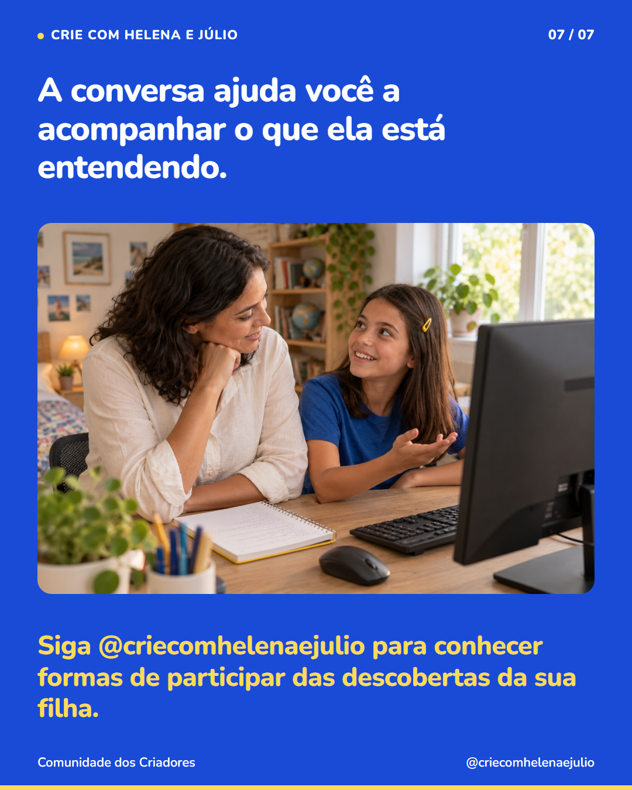

7 slides · 1080 × 1350 · Copy revisada · Como conversar sobre uma escolha da criança






“Por que você escolheu isso?” abre uma conversa diferente de “já terminou?”. Escolha um detalhe do trabalho que sua filha fez e deixe que ela explique. Se a resposta vier curta, peça para mostrar um exemplo. Dificuldade para falar não significa, sozinha, que ela não entendeu. Num jogo, ela também pode fazer um teste. No nosso exemplo de memória, as cartas precisam ficar abertas por um instante para o jogador ver os desenhos. Mudar esse tempo permite observar por que a espera faz parte da regra. A criança dá uma explicação, experimenta uma mudança e compara o que aconteceu. Você consegue acompanhar o raciocínio sem conhecer todos os comandos. Siga @criecomhelenaejulio para conhecer formas de participar das descobertas da sua filha.